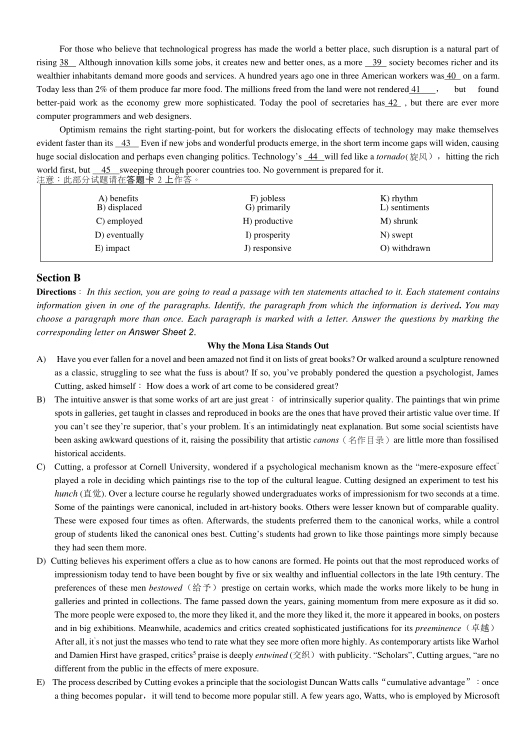

第 1 / 8 页

六级真题(一）
2015 年6 月大学英语六级考试真题(一）
1
2015 年6 月大学英语六级考试真题(一）
Part I
Writing
(30 minutes)
Directions：For this part, you are allowed 30 minutes to write an essay commenting on the saying “Knowledge is a
treasure，but practice is the key to it. ” You can give an example or two to illustrate your point of view. You should write
at least 150 words but no more than 200 words.
注意：此部分试题请在答题卡1 上作答。
Part Ⅱ
Listening Comprehension
(30 minutes)
Section A
Directions: In this section, you will hear 8 short conversations and 2 long conversations. At the end of each conversation,
one or more questions will be asked about what was said. Both the conversation and the questions will be spoken only
once. After each question there will be a pause. During the pause, you must read the four choices marked A), B) 9 C) and
D), and decide which is the best answer. Then mark the corresponding letter on Answer Sheet 1 with a single line
through the centre.
注意：此部分试题请在答题卡1 上作答。
1.
A)
Prepare for his exams.
C) Attend the concert.
B)
Catch up on his work.
D) Go on a vacation.
2.
A) Three crew members were involved in the incident.
B)
None of the hijackers carried any deadly weapons.
C)
The plane had been scheduled to fly to Japan.
D)
None of the passengers were injured or killed.
3.
A)
An article about the election.
C) An election campaign.
B)
A tedious job to be done.
D) A fascinating topic.
4.
A) The restaurant was not up to the speakers5 expectations.
B)
The restaurant places many ads in popular magazines.
C)
The critic thought highly of the Chinese restaurant.
D)
Chinatown has got the best restaurants in the city.
5.
A)
He is going to visit his mother in the hospital.
B)
He is going to take on a new job next week.
C)
He has many things to deal with right now.
D)
He behaves in a way nobody understands.
6.
A)
A large number of students refused to vote last night.
B)
At least twenty students are needed to vote on an issue.
C)
Major campus issues had to be discussed at the meeting.
D)
More students have to appear to make their voice heard.
7.
A)
The woman can hardly tell what she likes.
B)
The speakers like watching TV very much.
C)
The speakers have nothing to do but watch TV.
D)
The man seldom watched TV before retirement.
8.
A)
The woman should have registered earlier.
B)
He will help the woman solve the problem.
C)
He finds it hard to agree with what the woman says.
D)
The woman will be able to attend the classes she wants.
查看 / 复制本页文字
六级真题(一） 2015 年6 月大学英语六级考试真题(一） 1 2015 年6 月大学英语六级考试真题(一） Part I Writing (30 minutes) Directions：For this part, you are allowed 30 minutes to write an essay commenting on the saying “Knowledge is a treasure，but practice is the key to it. ” You can give an example or two to illustrate your point of view. You should write at least 150 words but no more than 200 words. 注意：此部分试题请在答题卡1 上作答。 Part Ⅱ Listening Comprehension (30 minutes) Section A Directions: In this section, you will hear 8 short conversations and 2 long conversations. At the end of each conversation, one or more questions will be asked about what was said. Both the conversation and the questions will be spoken only once. After each question there will be a pause. During the pause, you must read the four choices marked A), B) 9 C) and D), and decide which is the best answer. Then mark the corresponding letter on Answer Sheet 1 with a single line through the centre. 注意：此部分试题请在答题卡1 上作答。 1. A) Prepare for his exams. C) Attend the concert. B) Catch up on his work. D) Go on a vacation. 2. A) Three crew members were involved in the incident. B) None of the hijackers carried any deadly weapons. C) The plane had been scheduled to fly to Japan. D) None of the passengers were injured or killed. 3. A) An article about the election. C) An election campaign. B) A tedious job to be done. D) A fascinating topic. 4. A) The restaurant was not up to the speakers5 expectations. B) The restaurant places many ads in popular magazines. C) The critic thought highly of the Chinese restaurant. D) Chinatown has got the best restaurants in the city. 5. A) He is going to visit his mother in the hospital. B) He is going to take on a new job next week. C) He has many things to deal with right now. D) He behaves in a way nobody understands. 6. A) A large number of students refused to vote last night. B) At least twenty students are needed to vote on an issue. C) Major campus issues had to be discussed at the meeting. D) More students have to appear to make their voice heard. 7. A) The woman can hardly tell what she likes. B) The speakers like watching TV very much. C) The speakers have nothing to do but watch TV. D) The man seldom watched TV before retirement. 8. A) The woman should have registered earlier. B) He will help the woman solve the problem. C) He finds it hard to agree with what the woman says. D) The woman will be able to attend the classes she wants.
第 2 / 8 页
2015 年6 月大学英语六级考试真题(一）
19. A) Join in neighborhood patrols.
B) Get involved in his community.
20. A) Deterioration in the quality of life.
B) Increase of police patrols at night.
21. A) They may take a long time to solve.
B) They need assistance from the city.
Questions 9 to 12 are based on the conversation you have just heard.
9.A)
Persuade the man to join her company.
C) Export bikes to foreign markets.
B)
Employ the most up-to-date technology.
D) Expand their domestic business.
10. A)
The state subsidizes small and medium enterprises.
B)
The government has control over bicycle imports.
C)
They can compete with the best domestic manufacturers.
D)
They have a cost advantage and can charge higher prices.
11. A)
Extra costs might eat up their profits abroad.
B)
More workers will be needed to do packaging.
C)
They might lose to foreign bike manufacturers.
D)
It is very difficult to find suitable local agents.
12. A)
Report to the management.
C)
Conduct a feasibility study.
B)
Attract foreign investments.
D)
Consult financial experts.
Questions 13 to 15 are based on the conversation you have just heard.
13. A)
Coal burnt daily for the comfort of our homes.
B)
Anything that can be used to produce power.
C)
Fuel refined from oil extracted from underground.
D)
Electricity that keeps all kinds of machines running.
14. A)
Oil will soon be replaced by alternative energy sources.
B)
Oil reserves in the world will be exhausted in a decade.
C)
Oil consumption has given rise to many global problems.
D)
Oil production will begin to decline worldwide by 2025.
15. A)
Minimize the use of fossil fuels.
C)
Find the real cause for global
warming.
B)
Start developing alternative fuels.
D)
Take steps to reduce the greenhouse effect.
Section B
Directions：In this section ^ you will hear 3 short passages. At the end of each passage, you will hear some questions. Both
the passage and the questions will be spoken only once. After you hear a question, you must choose the best answer from
the four choices marked A ), B)，C) and D). Then mark the corresponding letter on Answer Sheet 1 with a single line
through the centre.
注意：此部分试题请在答题卡1 上作答。
Passage One
Questions 16 to 18 are based on the passage you have just heard.
16.
A)
The ability to predict fashion trends.
C)
Years of practical experience.
B)
A refined taste for artistic works.
D)
Strict professional training.
17.
A)
Promoting all kinds of American hand-made specialties.
B)
Strengthening cooperation with foreign governments.
C)
Conducting trade in art works with dealers overseas.
D)
Purchasing handicrafts from all over the world.
18.
A)
She has access to fashionable things.
C)
She can enjoy life on a modest salary.
B)
She is doing what she enjoys doing.
D)
She is free to do whatever she wants.
Passage Two
Questions 19 to 22 are based on the passage you have just heard.
C)
Voice his complaints to the city council.
D)
Make suggestions to the local authorities.
C)
Renovation of the vacant buildings.
D)
Violation of community regulations.
C)
They have to be dealt with one by one.
D)
They are too big for individual efforts.
查看 / 复制本页文字
2015 年6 月大学英语六级考试真题(一） 19. A) Join in neighborhood patrols. B) Get involved in his community. 20. A) Deterioration in the quality of life. B) Increase of police patrols at night. 21. A) They may take a long time to solve. B) They need assistance from the city. Questions 9 to 12 are based on the conversation you have just heard. 9.A) Persuade the man to join her company. C) Export bikes to foreign markets. B) Employ the most up-to-date technology. D) Expand their domestic business. 10. A) The state subsidizes small and medium enterprises. B) The government has control over bicycle imports. C) They can compete with the best domestic manufacturers. D) They have a cost advantage and can charge higher prices. 11. A) Extra costs might eat up their profits abroad. B) More workers will be needed to do packaging. C) They might lose to foreign bike manufacturers. D) It is very difficult to find suitable local agents. 12. A) Report to the management. C) Conduct a feasibility study. B) Attract foreign investments. D) Consult financial experts. Questions 13 to 15 are based on the conversation you have just heard. 13. A) Coal burnt daily for the comfort of our homes. B) Anything that can be used to produce power. C) Fuel refined from oil extracted from underground. D) Electricity that keeps all kinds of machines running. 14. A) Oil will soon be replaced by alternative energy sources. B) Oil reserves in the world will be exhausted in a decade. C) Oil consumption has given rise to many global problems. D) Oil production will begin to decline worldwide by 2025. 15. A) Minimize the use of fossil fuels. C) Find the real cause for global warming. B) Start developing alternative fuels. D) Take steps to reduce the greenhouse effect. Section B Directions：In this section ^ you will hear 3 short passages. At the end of each passage, you will hear some questions. Both the passage and the questions will be spoken only once. After you hear a question, you must choose the best answer from the four choices marked A ), B)，C) and D). Then mark the corresponding letter on Answer Sheet 1 with a single line through the centre. 注意：此部分试题请在答题卡1 上作答。 Passage One Questions 16 to 18 are based on the passage you have just heard. 16. A) The ability to predict fashion trends. C) Years of practical experience. B) A refined taste for artistic works. D) Strict professional training. 17. A) Promoting all kinds of American hand-made specialties. B) Strengthening cooperation with foreign governments. C) Conducting trade in art works with dealers overseas. D) Purchasing handicrafts from all over the world. 18. A) She has access to fashionable things. C) She can enjoy life on a modest salary. B) She is doing what she enjoys doing. D) She is free to do whatever she wants. Passage Two Questions 19 to 22 are based on the passage you have just heard. C) Voice his complaints to the city council. D) Make suggestions to the local authorities. C) Renovation of the vacant buildings. D) Violation of community regulations. C) They have to be dealt with one by one. D) They are too big for individual efforts.
第 3 / 8 页
2015 年6 月大学英语六级考试真题(一）
22.
A) He had got some groceries at a big discount.
B) He had read a funny poster near his seat.
C) He had done a small deed of kindness.
D) He had caught the bus just in time.
Passage Three
Questions 23 to 25 are based on the passage you have just heard.
23. A. Childhood and healthy growth.
B. Pressure and heart disease.
C. Family life and health.
D. Stress and depression.
24. A. It experienced a series of misfortunes.
B. It was in the process of reorganization.
C. His mother died of a sudden heart attack.
D. His wife left him because of his bad temper.
25. A. They would give him a triple bypass surgery.
B. They could remove the block in his artery.
C. They could do nothing to help him.
D. They would try hard to save his life.
Section C
Directions: In this section, you will hear a passage three times. When the passage is read for the first time,you should listen
carefully for its general idea. When the passage is read for the second time, you are required to fill in the blanks with the
exact words you have just heard. Finally, when the passage is read for the third time, you should check what you have
written.
注意：此部分试题请在答题卡1 上作答。
When most people think of the word "education," they think of a pupil as a sort of animate sausage casing. Into this
empty casing, the teachers 26
stuff "education."
But genuine education, as Socrates knew more than two thousand years ago, is not
27
the stuffings of information into a
person, but rather eliciting knowledge from him; it is the
28
of what is in the mind.
"The most important part of education," once wrote William Ernest Hocking, the 29
Harvard philosopher, "is this
instruction of a man in what he has inside of him. And, as Edith Hamilton has reminded us, Socrates never said, "I know, learn
from me." He said, rather, "Look into your own selvers and find the 30
of truth that God has put into every heart, and that only
you can kindle (点燃) to a 31 ."
In a dialogue, Socrates takes an ignorant slave boy, without a day of
32 , and proves to the amazed observers that the boy
really "knows" geometry--because the principles of geometry are already in his mind, waiting to be called out.
So many of the discussions and 33
about the content of education are useless and inconclusive because they 34
what
should "go into" the student rather than with what should be taken out, and how this can best be done.
The college student who once said to me, after a lecture, "I spend so much time studying that I don't have a chance to learn
anything," was clearly expressing his
35
with the sausage-casing view of education.
Part Ⅲ
Reading Comprehension
(40 minutes)
Section A
.
Directions：In this section, there is a passage with ten blanks. You are required to select one word for each blank from a
list of choices given in a word bank following the passage. Read the passage through carefully before making your choices.
Each choice in the bank is identified by a letter. Please mark the corresponding letter for each item on Answer Sheet 2
with a single line through the centre. You may not use any of the words in the bank more than once.
Questions 36 to 45 are based on the following passage.
Innovation, the elixir(灵丹妙药）of progress, has always cost people their jobs. In the Industrial Revolution hand weavers
were 36 aside by the mechanical loom. Over the past 30 years the digital revolution has
37 many of the mid-skill jobs that
supported 20th-century middle-class life. Typists, ticket agents, bank tellers and many production-line jobs have been dispensed
with, just as the weavers were.
查看 / 复制本页文字
2015 年6 月大学英语六级考试真题(一） 22. A) He had got some groceries at a big discount. B) He had read a funny poster near his seat. C) He had done a small deed of kindness. D) He had caught the bus just in time. Passage Three Questions 23 to 25 are based on the passage you have just heard. 23. A. Childhood and healthy growth. B. Pressure and heart disease. C. Family life and health. D. Stress and depression. 24. A. It experienced a series of misfortunes. B. It was in the process of reorganization. C. His mother died of a sudden heart attack. D. His wife left him because of his bad temper. 25. A. They would give him a triple bypass surgery. B. They could remove the block in his artery. C. They could do nothing to help him. D. They would try hard to save his life. Section C Directions: In this section, you will hear a passage three times. When the passage is read for the first time,you should listen carefully for its general idea. When the passage is read for the second time, you are required to fill in the blanks with the exact words you have just heard. Finally, when the passage is read for the third time, you should check what you have written. 注意：此部分试题请在答题卡1 上作答。 When most people think of the word "education," they think of a pupil as a sort of animate sausage casing. Into this empty casing, the teachers 26 stuff "education." But genuine education, as Socrates knew more than two thousand years ago, is not 27 the stuffings of information into a person, but rather eliciting knowledge from him; it is the 28 of what is in the mind. "The most important part of education," once wrote William Ernest Hocking, the 29 Harvard philosopher, "is this instruction of a man in what he has inside of him. And, as Edith Hamilton has reminded us, Socrates never said, "I know, learn from me." He said, rather, "Look into your own selvers and find the 30 of truth that God has put into every heart, and that only you can kindle (点燃) to a 31 ." In a dialogue, Socrates takes an ignorant slave boy, without a day of 32 , and proves to the amazed observers that the boy really "knows" geometry--because the principles of geometry are already in his mind, waiting to be called out. So many of the discussions and 33 about the content of education are useless and inconclusive because they 34 what should "go into" the student rather than with what should be taken out, and how this can best be done. The college student who once said to me, after a lecture, "I spend so much time studying that I don't have a chance to learn anything," was clearly expressing his 35 with the sausage-casing view of education. Part Ⅲ Reading Comprehension (40 minutes) Section A . Directions：In this section, there is a passage with ten blanks. You are required to select one word for each blank from a list of choices given in a word bank following the passage. Read the passage through carefully before making your choices. Each choice in the bank is identified by a letter. Please mark the corresponding letter for each item on Answer Sheet 2 with a single line through the centre. You may not use any of the words in the bank more than once. Questions 36 to 45 are based on the following passage. Innovation, the elixir(灵丹妙药）of progress, has always cost people their jobs. In the Industrial Revolution hand weavers were 36 aside by the mechanical loom. Over the past 30 years the digital revolution has 37 many of the mid-skill jobs that supported 20th-century middle-class life. Typists, ticket agents, bank tellers and many production-line jobs have been dispensed with, just as the weavers were.
第 4 / 8 页

For those who believe that technological progress has made the world a better place, such disruption is a natural part of
rising 38
Although innovation kills some jobs, it creates new and better ones, as a more
39
society becomes richer and its
wealthier inhabitants demand more goods and services. A hundred years ago one in three American workers was 40 on a farm.
Today less than 2% of them produce far more food. The millions freed from the land were not rendered 41
，
but
found
better-paid work as the economy grew more sophisticated. Today the pool of secretaries has 42 , but there are ever more
computer programmers and web designers.
Optimism remains the right starting-point, but for workers the dislocating effects of technology may make themselves
evident faster than its
43
Even if new jobs and wonderful products emerge, in the short term income gaps will widen, causing
huge social dislocation and perhaps even changing politics. Technology’s 44 will fed like a tornado(旋风），hitting the rich
world first, but
45
sweeping through poorer countries too. No government is prepared for it.
注意：此部分试题请在答题卡2 上作答。
Section B
Directions：In this section, you are going to read a passage with ten statements attached to it. Each statement contains
information given in one of the paragraphs. Identify, the paragraph from which the information is derived. You may
choose a paragraph more than once. Each paragraph is marked with a letter. Answer the questions by marking the
corresponding letter on Answer Sheet 2.
Why the Mona Lisa Stands Out
A)
Have you ever fallen for a novel and been amazed not find it on lists of great books? Or walked around a sculpture renowned
as a classic, struggling to see what the fuss is about? If so, you’ve probably pondered the question a psychologist, James
Cutting, asked himself：How does a work of art come to be considered great?
B)
The intuitive answer is that some works of art are just great：of intrinsically superior quality. The paintings that win prime
spots in galleries, get taught in classes and reproduced in books are the ones that have proved their artistic value over time. If
you can’t see they’re superior, that’s your problem. It’s an intimidatingly neat explanation. But some social scientists have
been asking awkward questions of it, raising the possibility that artistic canons（名作目录）are little more than fossilised
historical accidents.
C)
Cutting, a professor at Cornell University, wondered if a psychological mechanism known as the “mere-exposure effect”
played a role in deciding which paintings rise to the top of the cultural league. Cutting designed an experiment to test his
hunch (直觉). Over a lecture course he regularly showed undergraduates works of impressionism for two seconds at a time.
Some of the paintings were canonical, included in art-history books. Others were lesser known but of comparable quality.
These were exposed four times as often. Afterwards, the students preferred them to the canonical works, while a control
group of students liked the canonical ones best. Cutting’s students had grown to like those paintings more simply because
they had seen them more.
D) Cutting believes his experiment offers a clue as to how canons are formed. He points out that the most reproduced works of
impressionism today tend to have been bought by five or six wealthy and influential collectors in the late 19th century. The
preferences of these men bestowed（给予）prestige on certain works, which made the works more likely to be hung in
galleries and printed in collections. The fame passed down the years, gaining momentum from mere exposure as it did so.
The more people were exposed to, the more they liked it, and the more they liked it, the more it appeared in books, on posters
and in big exhibitions. Meanwhile, academics and critics created sophisticated justifications for its preeminence（卓越）
After all, it’s not just the masses who tend to rate what they see more often more highly. As contemporary artists like Warhol
and Damien Hirst have grasped, critics5 praise is deeply entwined (交织）with publicity. “Scholars”, Cutting argues, “are no
different from the public in the effects of mere exposure.
E)
The process described by Cutting evokes a principle that the sociologist Duncan Watts calls“cumulative advantage”：once
a thing becomes popular，it will tend to become more popular still. A few years ago, Watts, who is employed by Microsoft
A) benefits
F) jobless
K) rhythm
B) displaced
G) primarily
L) sentiments
C) employed
H) productive
M) shrunk
D) eventually
I) prosperity
N) swept
E) impact
J) responsive
O) withdrawn
查看 / 复制本页文字
For those who believe that technological progress has made the world a better place, such disruption is a natural part of rising 38 Although innovation kills some jobs, it creates new and better ones, as a more 39 society becomes richer and its wealthier inhabitants demand more goods and services. A hundred years ago one in three American workers was 40 on a farm. Today less than 2% of them produce far more food. The millions freed from the land were not rendered 41 ， but found better-paid work as the economy grew more sophisticated. Today the pool of secretaries has 42 , but there are ever more computer programmers and web designers. Optimism remains the right starting-point, but for workers the dislocating effects of technology may make themselves evident faster than its 43 Even if new jobs and wonderful products emerge, in the short term income gaps will widen, causing huge social dislocation and perhaps even changing politics. Technology’s 44 will fed like a tornado(旋风），hitting the rich world first, but 45 sweeping through poorer countries too. No government is prepared for it. 注意：此部分试题请在答题卡2 上作答。 Section B Directions：In this section, you are going to read a passage with ten statements attached to it. Each statement contains information given in one of the paragraphs. Identify, the paragraph from which the information is derived. You may choose a paragraph more than once. Each paragraph is marked with a letter. Answer the questions by marking the corresponding letter on Answer Sheet 2. Why the Mona Lisa Stands Out A) Have you ever fallen for a novel and been amazed not find it on lists of great books? Or walked around a sculpture renowned as a classic, struggling to see what the fuss is about? If so, you’ve probably pondered the question a psychologist, James Cutting, asked himself：How does a work of art come to be considered great? B) The intuitive answer is that some works of art are just great：of intrinsically superior quality. The paintings that win prime spots in galleries, get taught in classes and reproduced in books are the ones that have proved their artistic value over time. If you can’t see they’re superior, that’s your problem. It’s an intimidatingly neat explanation. But some social scientists have been asking awkward questions of it, raising the possibility that artistic canons（名作目录）are little more than fossilised historical accidents. C) Cutting, a professor at Cornell University, wondered if a psychological mechanism known as the “mere-exposure effect” played a role in deciding which paintings rise to the top of the cultural league. Cutting designed an experiment to test his hunch (直觉). Over a lecture course he regularly showed undergraduates works of impressionism for two seconds at a time. Some of the paintings were canonical, included in art-history books. Others were lesser known but of comparable quality. These were exposed four times as often. Afterwards, the students preferred them to the canonical works, while a control group of students liked the canonical ones best. Cutting’s students had grown to like those paintings more simply because they had seen them more. D) Cutting believes his experiment offers a clue as to how canons are formed. He points out that the most reproduced works of impressionism today tend to have been bought by five or six wealthy and influential collectors in the late 19th century. The preferences of these men bestowed（给予）prestige on certain works, which made the works more likely to be hung in galleries and printed in collections. The fame passed down the years, gaining momentum from mere exposure as it did so. The more people were exposed to, the more they liked it, and the more they liked it, the more it appeared in books, on posters and in big exhibitions. Meanwhile, academics and critics created sophisticated justifications for its preeminence（卓越） After all, it’s not just the masses who tend to rate what they see more often more highly. As contemporary artists like Warhol and Damien Hirst have grasped, critics5 praise is deeply entwined (交织）with publicity. “Scholars”, Cutting argues, “are no different from the public in the effects of mere exposure. E) The process described by Cutting evokes a principle that the sociologist Duncan Watts calls“cumulative advantage”：once a thing becomes popular，it will tend to become more popular still. A few years ago, Watts, who is employed by Microsoft A) benefits F) jobless K) rhythm B) displaced G) primarily L) sentiments C) employed H) productive M) shrunk D) eventually I) prosperity N) swept E) impact J) responsive O) withdrawn
第 5 / 8 页
2015 年6 月大学英语六级考试真题(一）
to study the dynamics of social networks, had a similar experience to Cutting
‘s in another Paris museum. After queuing to
see the“Mona Lisa”in its climate- controlled bulletproof box at the Louvre, he came away puzzled：why was it considered
so superior to the three other Leonardos in the previous chamber, to which nobody seemed to be paying the slightest
attention?
F)
When Watts looked into the history of“the greatest painting of all time”,he discovered that, for most of its life, the “Mona
Lisa’’ remained in relative obscurity. In the 1850s, Leonardo da Vinci was considered no match for giants of Renaissance art
like Titian and Raphael, whose works were worth almost ten times as much as the “Mona Lisa”. It was only in the 20th
century that Leonardo’s portrait of his patron5s wife rocketed to the number-one spot. What propelled it there wasn’t a
scholarly re- evaluation, but a theft.
G)
In 1911 a maintenance worker at the Louvre walked out of the museum with the “Mona Lisa”, hidden under his smock (工
作服). Parisians were shocked at the theft of a painting to which, until then, they had paid little attention. When the museum
reopened, people queued to see the gap where the
“Mona Lisa
“, had once hung in a way they had never done for the painting
itself. From then on, the
“Mona Lisa
“ ，came to represent Western culture itself.
H)
Although many have tried., it does Seem improbable that the painting
‘s unique status can be attributed entirely to the quality
of its brushstrokes. It has been said that the subjects eyes follow the viewer around the room. But as the painting’s
biographer, Donald Sassoon, dryly notes,
“In reality the effect can be obtained from any portrait. ’’ Duncan Watts proposes
that the “Mona Lisa” is merely an extreme example of a general rule. Paintings? poems and pop songs are buoyed
（使
浮起）or sunk by random events or preferences that turn into waves of influence, passing down the generations.
I) “Saying that cultural objects have value,”Brian Eno once wrote,“ like saying that telephones have conversations”.Nearly
all the cultural objects we consume arrive wrapped in inherited opinion；our preferences are always, to some extent,
someone else’s. Visitors to the “Mona Lisa” know they are about to visit the greatest work of art ever and come away
appropriately impressed—or let down. An audience at a performance of“Hamlet”, know it is regarded as a work of genius,
so that is what they mostly see. Watts even calls the preeminence of Shakespeare a “historical accident”.
J)
Although the rigid high-low distinction fell apart in the 1960s, we still use culture as a badge of identity. Today’s fashion for
eclecticism (折中主义）一“I love Bach, Abba and Jay Z”-is, Shamus Khan, a Columbia University psychologist, argues, a
new way for the middle class to distinguish themselves from what they perceive to be the narrow tastes of those beneath
them in the social hierarchy.
K)
The intrinsic quality of a work of art is starting to seem like its least important attribute. But perhaps it’s more significant than
our social scientists allow. First of all, a work needs a certain quality to be eligible to be swept to the top of the pile. The
“Mona Lisa” may not be a worthy world champion, but it was in the Louvre in the first place, and not by accident. Secondly,
some stuff is simply better than other stuff. Read “Hamlet” after reading even the greatest of Shakespeare’s contemporaries,
and the difference may strike you as unarguable.
L)
A study in the British Journal of Aesthetics suggests that the exposure effect doesn’t work the same way on everything, and
points to a different conclusion about how canons are formed. The social scientists are right to say that we should be a little
sceptical of greatness, and that we should always look in the next room. Great art and mediocrity(平庸) can get confused,
even by experts. But that
‘s why we need to see, and read, as much as we can. The more we5re exposed to the good and the
bad, the better we are at telling the difference. The eclecticists have it.
查看 / 复制本页文字
2015 年6 月大学英语六级考试真题(一） to study the dynamics of social networks, had a similar experience to Cutting ‘s in another Paris museum. After queuing to see the“Mona Lisa”in its climate- controlled bulletproof box at the Louvre, he came away puzzled：why was it considered so superior to the three other Leonardos in the previous chamber, to which nobody seemed to be paying the slightest attention? F) When Watts looked into the history of“the greatest painting of all time”,he discovered that, for most of its life, the “Mona Lisa’’ remained in relative obscurity. In the 1850s, Leonardo da Vinci was considered no match for giants of Renaissance art like Titian and Raphael, whose works were worth almost ten times as much as the “Mona Lisa”. It was only in the 20th century that Leonardo’s portrait of his patron5s wife rocketed to the number-one spot. What propelled it there wasn’t a scholarly re- evaluation, but a theft. G) In 1911 a maintenance worker at the Louvre walked out of the museum with the “Mona Lisa”, hidden under his smock (工 作服). Parisians were shocked at the theft of a painting to which, until then, they had paid little attention. When the museum reopened, people queued to see the gap where the “Mona Lisa “, had once hung in a way they had never done for the painting itself. From then on, the “Mona Lisa “ ，came to represent Western culture itself. H) Although many have tried., it does Seem improbable that the painting ‘s unique status can be attributed entirely to the quality of its brushstrokes. It has been said that the subjects eyes follow the viewer around the room. But as the painting’s biographer, Donald Sassoon, dryly notes, “In reality the effect can be obtained from any portrait. ’’ Duncan Watts proposes that the “Mona Lisa” is merely an extreme example of a general rule. Paintings? poems and pop songs are buoyed （使 浮起）or sunk by random events or preferences that turn into waves of influence, passing down the generations. I) “Saying that cultural objects have value,”Brian Eno once wrote,“ like saying that telephones have conversations”.Nearly all the cultural objects we consume arrive wrapped in inherited opinion；our preferences are always, to some extent, someone else’s. Visitors to the “Mona Lisa” know they are about to visit the greatest work of art ever and come away appropriately impressed—or let down. An audience at a performance of“Hamlet”, know it is regarded as a work of genius, so that is what they mostly see. Watts even calls the preeminence of Shakespeare a “historical accident”. J) Although the rigid high-low distinction fell apart in the 1960s, we still use culture as a badge of identity. Today’s fashion for eclecticism (折中主义）一“I love Bach, Abba and Jay Z”-is, Shamus Khan, a Columbia University psychologist, argues, a new way for the middle class to distinguish themselves from what they perceive to be the narrow tastes of those beneath them in the social hierarchy. K) The intrinsic quality of a work of art is starting to seem like its least important attribute. But perhaps it’s more significant than our social scientists allow. First of all, a work needs a certain quality to be eligible to be swept to the top of the pile. The “Mona Lisa” may not be a worthy world champion, but it was in the Louvre in the first place, and not by accident. Secondly, some stuff is simply better than other stuff. Read “Hamlet” after reading even the greatest of Shakespeare’s contemporaries, and the difference may strike you as unarguable. L) A study in the British Journal of Aesthetics suggests that the exposure effect doesn’t work the same way on everything, and points to a different conclusion about how canons are formed. The social scientists are right to say that we should be a little sceptical of greatness, and that we should always look in the next room. Great art and mediocrity(平庸) can get confused, even by experts. But that ‘s why we need to see, and read, as much as we can. The more we5re exposed to the good and the bad, the better we are at telling the difference. The eclecticists have it.
第 6 / 8 页
注意：此部分试题请在答题卡2 上作答。
46.
According to Duncan Watts, the superiority of the
“Mona Lisa
” ，to Leonardo’s other works resulted from the cumulative
advantage.
47.
Some social scientists have raised doubts about the intrinsic value of certain works of art.
48.
It is often random events or preferences that determine the fate of a piece of art.
49.
In his experiment, Cutting found that his subjects liked lesser known works better than canonical works because of more
exposure.
50.
The author thinks the greatness of an art work still lies in its intrinsic value.
51.
It is true of critics as well as ordinary people that the popularity of artistic works is closely associated with publicity.
52.
We need to expose ourselves to more art and literature in order to tell the superior from the inferior.
53.
A study of the history of the greatest paintings suggests even a great work of art could experience years of neglect.
54.
Culture is still used as a mark to distinguish one social class from another.
55.
Opinions about and preferences for cultural objects are often inheritable.
Section C
Directions：There are 2 passages in this section . Each passage is followed by some questions or unfinished statements.
For each of them there are four choices marked A), B) , C) and D). You should decide on the best choice and mark the
corresponding letter on Answer Sheet 2 with a single line through the centre.
Passage One
Questions 56 to 60 are based on the following passage.
When the right person is holding the right job at the right moment, that person’s influence is greatly expanded. That is the
position in which Janet Yellen, who is expected to be confirmed as the next chair of the Federal Reserve Bank (Fed) in January,
now finds herself. If you believe, as many do, that unemployment is the major economic and social concern of our day, then it is
no stretch to think Yellen is the most powerful person in the world right now.
Throughout the 2008 financial crisis and the recession and recovery that followed, central banks have taken on the role of
stimulators of last resort, holding up the global economy with vast amounts of money in the form of asset buying. Yellen,
previously a Fed vice chair, was one of the principal architects of the Fed $3.8 trillion money dump. A star economist known for
her groundbreaking work on labor markets, Yellen was a kind of prophetess early on in the crisis for her warnings about the
subprime (次级债)meltdown. Now it will be her job to get the Fed and the markets out of the biggest and most unconventional
monetary program in history without derailing the fragile recovery.
The good news is that Yellen, 67, is particularly well suited to meet these challenges. She has a keen understanding of
financial markets, an appreciation for their imperfections and a strong belief that human suffering was more related to
unemployment than anything else.
Some experts worry that Yellen will be inclined to chase unemployment to the neglect of inflation. But with wages still
relatively flat and the economy increasingly divided between the well-off and the long-term unemployed, more people worry
about the opposite, deflation (通货紧缩）that would aggravate the economy’s problems.
Either way, the incoming Fed chief will have to walk a fine line in slowly ending the stimulus. It must be steady enough to
deflate bubbles(去泡沫) and bring markets back down to earth but not so quick that it creates another credit crisis.
Unlike many past Fed leaders, Yellen is not one to buy into the finance industry
‘s argument that it should be left alone to
regulate itself. She knows all along the Fed has been too slack on regulation of finance.
Yellen is likely to address the issue right after she pushes unemployment below 6%, stabilizes markets and makes sure that
the recovery is more inclusive and robust. As Princeton Professor Alan Blinder says, “She’s smart as a whip, deeply logical,
willing to argue but also a good listener. She can persuade without creating hostility”All those traits will be useful as the global
economy
‘s new power player takes on its most annoying problems.
注意：此部分试题请在答题卡2 上作答。
56. What do many people think is the biggest problem facing Janet Yellen?
A)
Lack of money.
C) Unemployment.
B)
Subprime crisis.
D) Social instability.
57. What did Yellen help the Fed do to tackle the 2008 financial crisis?
查看 / 复制本页文字
注意：此部分试题请在答题卡2 上作答。 46. According to Duncan Watts, the superiority of the “Mona Lisa ” ，to Leonardo’s other works resulted from the cumulative advantage. 47. Some social scientists have raised doubts about the intrinsic value of certain works of art. 48. It is often random events or preferences that determine the fate of a piece of art. 49. In his experiment, Cutting found that his subjects liked lesser known works better than canonical works because of more exposure. 50. The author thinks the greatness of an art work still lies in its intrinsic value. 51. It is true of critics as well as ordinary people that the popularity of artistic works is closely associated with publicity. 52. We need to expose ourselves to more art and literature in order to tell the superior from the inferior. 53. A study of the history of the greatest paintings suggests even a great work of art could experience years of neglect. 54. Culture is still used as a mark to distinguish one social class from another. 55. Opinions about and preferences for cultural objects are often inheritable. Section C Directions：There are 2 passages in this section . Each passage is followed by some questions or unfinished statements. For each of them there are four choices marked A), B) , C) and D). You should decide on the best choice and mark the corresponding letter on Answer Sheet 2 with a single line through the centre. Passage One Questions 56 to 60 are based on the following passage. When the right person is holding the right job at the right moment, that person’s influence is greatly expanded. That is the position in which Janet Yellen, who is expected to be confirmed as the next chair of the Federal Reserve Bank (Fed) in January, now finds herself. If you believe, as many do, that unemployment is the major economic and social concern of our day, then it is no stretch to think Yellen is the most powerful person in the world right now. Throughout the 2008 financial crisis and the recession and recovery that followed, central banks have taken on the role of stimulators of last resort, holding up the global economy with vast amounts of money in the form of asset buying. Yellen, previously a Fed vice chair, was one of the principal architects of the Fed $3.8 trillion money dump. A star economist known for her groundbreaking work on labor markets, Yellen was a kind of prophetess early on in the crisis for her warnings about the subprime (次级债)meltdown. Now it will be her job to get the Fed and the markets out of the biggest and most unconventional monetary program in history without derailing the fragile recovery. The good news is that Yellen, 67, is particularly well suited to meet these challenges. She has a keen understanding of financial markets, an appreciation for their imperfections and a strong belief that human suffering was more related to unemployment than anything else. Some experts worry that Yellen will be inclined to chase unemployment to the neglect of inflation. But with wages still relatively flat and the economy increasingly divided between the well-off and the long-term unemployed, more people worry about the opposite, deflation (通货紧缩）that would aggravate the economy’s problems. Either way, the incoming Fed chief will have to walk a fine line in slowly ending the stimulus. It must be steady enough to deflate bubbles(去泡沫) and bring markets back down to earth but not so quick that it creates another credit crisis. Unlike many past Fed leaders, Yellen is not one to buy into the finance industry ‘s argument that it should be left alone to regulate itself. She knows all along the Fed has been too slack on regulation of finance. Yellen is likely to address the issue right after she pushes unemployment below 6%, stabilizes markets and makes sure that the recovery is more inclusive and robust. As Princeton Professor Alan Blinder says, “She’s smart as a whip, deeply logical, willing to argue but also a good listener. She can persuade without creating hostility”All those traits will be useful as the global economy ‘s new power player takes on its most annoying problems. 注意：此部分试题请在答题卡2 上作答。 56. What do many people think is the biggest problem facing Janet Yellen? A) Lack of money. C) Unemployment. B) Subprime crisis. D) Social instability. 57. What did Yellen help the Fed do to tackle the 2008 financial crisis?
第 7 / 8 页
2015 年6 月大学英语六级考试真题(一）
A)
Take effective measures to curb inflation.
B)
Deflate the bubbles in the American economy.
C)
Formulate policies to help financial institutions.
D)
Pour money into the market through asset buying.
58. What is a greater concern of the general public?
A)
Recession.
B) Deflation.
C) Inequality.
D) Income.
59. What is Yellen likely to do in her position as the Fed chief?
A)
Develop a new monetary program.
C) Tighten financial regulation.
B)
Restore public confidence. ,
D) Reform the credit system.
60. How does Alan Blinder portray Yellen?
A)
She possesses strong persuasive power.
B)
She has confidence in what she is doing.
C)
She is one of the world’s greatest economists.
D)
She is the most powerful Fed chief in history.
Passage Two
Questions 61 to 65 are based on the following passage.
Air pollution is deteriorating in many places around the world. The fact that public parks in cities become crowded as soon
as the sun shines proves that people long to breathe in green, open spaces. They do not all know what they are seeking but they
flock there, nevertheless. And, in these surroundings, they are generally both peaceful and peaceable. It is rare to see people
fighting in a garden. Perhaps struggle unfolds first, not at an economic or social level, but over the appropriation of air, essential
to life itself. If human beings can breathe and share air, they don^ need to struggle with one another.
Unfortunately, in our western tradition, neither materialist nor idealist theoreticians give enough consideration to this basic
condition for life. As for politicians, despite proposing curbs on environmental pollution, they have not yet called for it to be made
a crime. Wealthy countries are even allowed to pollute if they pay for it.
But is our life worth anything other than money? The plant world shows us in silence what faithfulness to life consists of. It
also helps us to a new beginning, urging us to care for our breath, not only at a vital but also at a spiritual level. The
interdependence to which we must pay the closest attention is that which exists between ourselves and the plant world. Often
described as “the lungs of the planet” the woods that cover the earth offer us the gift of breathable air by releasing oxygen. But
their capacity to renew the air polluted by industry has long reached its limit. If we lack the air necessary for a healthy life, it is
because we have filled it with chemicals and undercut the ability of plants to regenerate it. As we know, rapid deforestation
combined with the massive burning of fossil fuels is an explosive recipe for an irreversible disaster.
The fight over the appropriation of resources will lead the entire planet to hell unless humans learn to share life, both with
each other and with plants. This task is simultaneously ethical and political because it can be discharged only when each takes it
upon herself or himself and only when it is accomplished together with others. The lesson taught by plants is that sharing life
expands and enhances the sphere of the living, while dividing life into so-called natural or human resources diminishes it. We
must come to view the air, the plants and ourselves as the contributors to the preservation of life and growth, rather than a web of
quantifiable objects or productive potentialities at our disposal. Perhaps then we would finally begin to live, rather than being
concerned with bare survival.
注意：此部分试题请在答题卡2 上作答。
61. What does the author assume might be the primary reason that people would struggle with each other?
A)
To get their share of clean air
C) To gain a higher social status.
B)
To pursue a comfortable life.
D) To seek economic benefits.
62. What does the author accuse western politicians of?
A)
Depriving common people of the right to clean air.
B)
Giving priority to theory rather than practical action.
C)
Offering preferential treatment to wealthy countries.
D)
Failing to pass laws to curb environmental pollution.
63. What does the author try to draw our closest attention to?
查看 / 复制本页文字
2015 年6 月大学英语六级考试真题(一） A) Take effective measures to curb inflation. B) Deflate the bubbles in the American economy. C) Formulate policies to help financial institutions. D) Pour money into the market through asset buying. 58. What is a greater concern of the general public? A) Recession. B) Deflation. C) Inequality. D) Income. 59. What is Yellen likely to do in her position as the Fed chief? A) Develop a new monetary program. C) Tighten financial regulation. B) Restore public confidence. , D) Reform the credit system. 60. How does Alan Blinder portray Yellen? A) She possesses strong persuasive power. B) She has confidence in what she is doing. C) She is one of the world’s greatest economists. D) She is the most powerful Fed chief in history. Passage Two Questions 61 to 65 are based on the following passage. Air pollution is deteriorating in many places around the world. The fact that public parks in cities become crowded as soon as the sun shines proves that people long to breathe in green, open spaces. They do not all know what they are seeking but they flock there, nevertheless. And, in these surroundings, they are generally both peaceful and peaceable. It is rare to see people fighting in a garden. Perhaps struggle unfolds first, not at an economic or social level, but over the appropriation of air, essential to life itself. If human beings can breathe and share air, they don^ need to struggle with one another. Unfortunately, in our western tradition, neither materialist nor idealist theoreticians give enough consideration to this basic condition for life. As for politicians, despite proposing curbs on environmental pollution, they have not yet called for it to be made a crime. Wealthy countries are even allowed to pollute if they pay for it. But is our life worth anything other than money? The plant world shows us in silence what faithfulness to life consists of. It also helps us to a new beginning, urging us to care for our breath, not only at a vital but also at a spiritual level. The interdependence to which we must pay the closest attention is that which exists between ourselves and the plant world. Often described as “the lungs of the planet” the woods that cover the earth offer us the gift of breathable air by releasing oxygen. But their capacity to renew the air polluted by industry has long reached its limit. If we lack the air necessary for a healthy life, it is because we have filled it with chemicals and undercut the ability of plants to regenerate it. As we know, rapid deforestation combined with the massive burning of fossil fuels is an explosive recipe for an irreversible disaster. The fight over the appropriation of resources will lead the entire planet to hell unless humans learn to share life, both with each other and with plants. This task is simultaneously ethical and political because it can be discharged only when each takes it upon herself or himself and only when it is accomplished together with others. The lesson taught by plants is that sharing life expands and enhances the sphere of the living, while dividing life into so-called natural or human resources diminishes it. We must come to view the air, the plants and ourselves as the contributors to the preservation of life and growth, rather than a web of quantifiable objects or productive potentialities at our disposal. Perhaps then we would finally begin to live, rather than being concerned with bare survival. 注意：此部分试题请在答题卡2 上作答。 61. What does the author assume might be the primary reason that people would struggle with each other? A) To get their share of clean air C) To gain a higher social status. B) To pursue a comfortable life. D) To seek economic benefits. 62. What does the author accuse western politicians of? A) Depriving common people of the right to clean air. B) Giving priority to theory rather than practical action. C) Offering preferential treatment to wealthy countries. D) Failing to pass laws to curb environmental pollution. 63. What does the author try to draw our closest attention to?
第 8 / 8 页
A)
The massive burning of fossil fuels.
B)
Our relationship to the plant world.
C)
The capacity of plants to renew polluted air.
D)
Large-scale deforestation across the world.
64. How can human beings accomplish the goal of protecting the planet according to the author?
A)
By showing respect for plants.
C)
By tapping all natural resources.
B)
By preserving all forms of life.
D)
By pooling their efforts together.
65. What does the author suggest we do in order not just to survive?
A)
Expand the sphere of living.
C)
Share life with nature.
B)
Develop nature’s potentials.
D)
Allocate the resources.
Part Ⅳ
Translation
(30 minutes)
Directions：For this part, you are allowed 30 minutes to translate a passage from Chinese into English. You should write
your answer on Answer Sheet 2.
中国传统的待客之道要求饭菜丰富多样，让客人吃不完。中国宴席上典型的菜单包括开席的
一套凉菜及其后的热菜，例如肉类、鸡鸭、蔬菜等。大多数宴席上，全鱼被认为是必不可少的，
除非已经上过各式海鮮。如今，中国人喜欢把西方特色菜与传统中式菜肴融于一席，因此牛排上
桌也不少见。沙拉也已流行起来，尽管传统上中国人一般不吃任何未经烹饪的菜肴。宴席通常至
少有一道汤，可以最先或最后上桌。甜点和水果通常标志宴席的结束。
注意：此部分试题请在答题卡2 上作答。
查看 / 复制本页文字
A) The massive burning of fossil fuels. B) Our relationship to the plant world. C) The capacity of plants to renew polluted air. D) Large-scale deforestation across the world. 64. How can human beings accomplish the goal of protecting the planet according to the author? A) By showing respect for plants. C) By tapping all natural resources. B) By preserving all forms of life. D) By pooling their efforts together. 65. What does the author suggest we do in order not just to survive? A) Expand the sphere of living. C) Share life with nature. B) Develop nature’s potentials. D) Allocate the resources. Part Ⅳ Translation (30 minutes) Directions：For this part, you are allowed 30 minutes to translate a passage from Chinese into English. You should write your answer on Answer Sheet 2. 中国传统的待客之道要求饭菜丰富多样，让客人吃不完。中国宴席上典型的菜单包括开席的 一套凉菜及其后的热菜，例如肉类、鸡鸭、蔬菜等。大多数宴席上，全鱼被认为是必不可少的， 除非已经上过各式海鮮。如今，中国人喜欢把西方特色菜与传统中式菜肴融于一席，因此牛排上 桌也不少见。沙拉也已流行起来，尽管传统上中国人一般不吃任何未经烹饪的菜肴。宴席通常至 少有一道汤，可以最先或最后上桌。甜点和水果通常标志宴席的结束。 注意：此部分试题请在答题卡2 上作答。